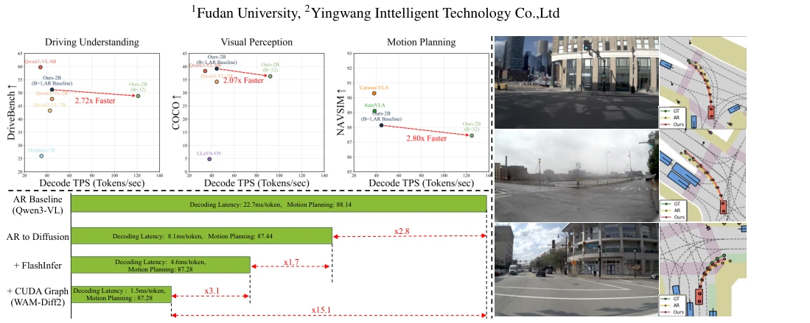
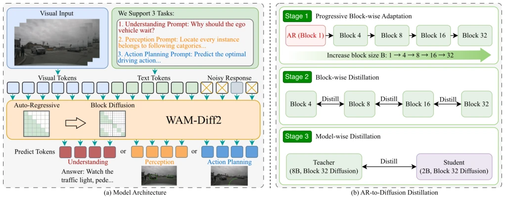
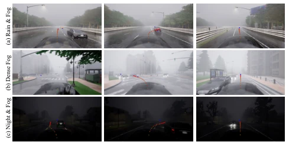
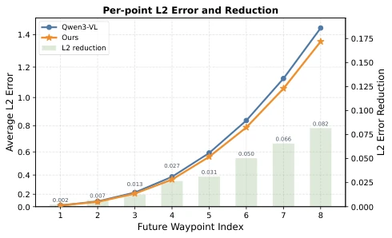
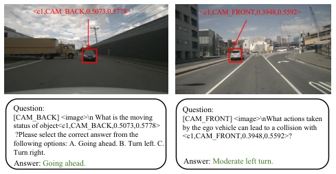
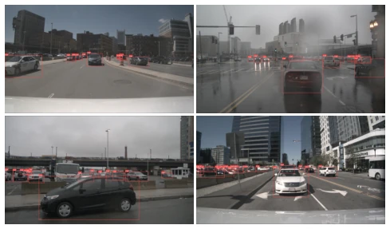
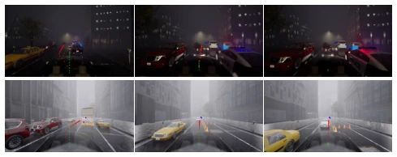
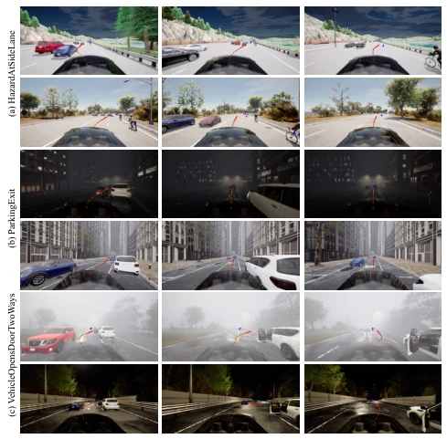

This paper attempts to transform autonomous driving VLA from "serial" to "parallel", which sounds like installing a turbocharger for autonomous driving. WAM-Diff2 indeed achieved an astonishing 15.1x speedup, reducing from 22.7ms to 1.5ms, which is simply a lifeline in real-time control. But don't get too excited, this "distillation" process is like asking an old professor to learn new teaching methods; although the student (2B model) runs faster in the end, it still relies on the large model (8B) for hand-in-hand teaching. Moreover, the spatial quantization error brought by discrete diffusion (Figure 10) shows it is not a "silver bullet", and trajectory smoothness may be affected. Overall, this is a successful "engine swap" experiment, but the maintenance cost (distillation complexity) and performance ceiling (dependency on AR backbone) are worth deep thought.
研究动机Motivation
现有的端到端自动驾驶 VLA 大多基于自回归（AR）架构，像 Qwen3-VL (Bai et al. 2025a) 这样的基座虽然语义理解强，但串行解码导致高延迟，且存在 exposure bias (Bachmann and Nagarajan 2024)，长 horizon 规划容易误差累积。另一方面，扩散策略 (Zheng et al. 2026; Liao et al. 2025) 虽然并行高效，但通常缺乏 AR 模型的通用视觉 - 语言推理能力。现有研究在“认知智能”和“执行效率”之间被迫做妥协。本文旨在打破这种二元对立，利用预训练 AR 模型的语义知识初始化并行扩散架构，解决 AR 的延迟和误差累积问题，同时保留多任务推理能力。
Existing end-to-end autonomous driving VLA are mostly based on autoregressive (AR) architecture; backbones like Qwen3-VL (Bai et al. 2025a) although have strong semantic understanding, serial decoding leads to high latency, and there exists exposure bias (Bachmann and Nagarajan 2024), long horizon planning easily accumulates errors. On the other hand, diffusion strategies (Zheng et al. 2026; Liao et al. 2025) although parallel efficient, usually lack the general visual-language reasoning ability of AR models. Existing research is forced to compromise between "cognitive intelligence" and "execution efficiency". This paper aims to break this binary opposition, utilizing pre-trained AR model's semantic knowledge to initialize parallel diffusion architecture, solving AR's latency and error accumulation problems, while retaining multi-task reasoning ability.

Figure 1: Efficiency, multi-task performance, and planning robustness of WAM-Diff2. Top left: performance versus decoding latency (ms/token) across driving understanding (DriveBench), visual perception (COCO), and motion planning (NAVSIM). Our parallel discrete diffusion approach (B = 32) yields up to a 2.80× speedup over the autoregressive baseline while preserving high multi-task proficiency. Bottom left: latency optimization breakdown. Transitioning from the AR baseline to the WAM-Diff2 diffusion paradigm accelerates decoding by 2.8×. Integrating FlashInfer and CUDA Graphs yields a cumulative 15.1× latency reduction (from 22.7 ms/token to 1.5 ms/token) with negligible planning degradation. Right: mitigation of exposure bias in long-horizon trajectory prediction. Compared to the AR basel
The core is a three-layer hierarchical distillation framework. First, introduce block-causal attention in architecture, allowing bidirectional parallelism within blocks, maintaining causality between blocks. Stage 1 is progressive block adaptation, decoding block size B gradually expands from 1 to 32, smoothing attention mechanism transition. Stage 2 is block-level distillation, using stable small block diffusion teacher (e.g., B=4) to guide large block student (B=8/16/32), using symmetric Jensen-Shannon Divergence (JSD) loss to align distributions, preventing mode collapse. Stage 3 is cross-scale distillation, using 8B diffusion teacher to guide 2B student, utilizing high alignment of token prediction patterns under the same paradigm (Top-K overlap), letting the small model inherit the large model's cognition. Finally cooperate with FlashInfer and CUDA Graphs for system-level optimization, achieving parallel decoding acceleration.

Figure 2: Architectural overview of WAM-Diff2 and the three-stage hierarchical distillation framework. (a) Multi-view images, linguistic instructions, and noisy response tokens are mapped into a unified token space for multi-task inference across driving understanding, perception, and action planning. By replacing traditional autoregressive causal masks with a block-causal attention pattern, WAM-Diff2 enables bidirectional parallel token refinement within each decoding block while preserving cross-block causal constraints. (b) The autoregressive-to-diffusion transition is accomplished through three progressive stages: Stage 1 incrementally expands the decoding block size (B = 1 →32) to smoothly adapt the underlying attention mechanisms; Stage 2 applies recursive block-wise distillation fro
Evaluated on NAVSIM, DriveBench, and COCO. Comparison baselines include Qwen3-VL (Bai et al. 2025a) and specialized planners such as ReCogDrive (Li et al. 2025c). Results show, WAM-Diff2 (B=32) while maintaining PDMS 88.3 (NAVSIM v1) and DriveBench 48.80 performance, decoding throughput increased from 44.5 TPS to 673.4 TPS (including optimization). Ablation experiments show, direct AR to Diffusion leads to performance drop (Table 4), must go through block-level distillation. Figure 7 shows L2 error accumulation decreases over time, proving exposure bias is alleviated. But Figure 10 also reveals trajectory smoothness issues caused by discretization.

Figure 12: Representative extreme-weather driving scenarios on Bench2Drive, specifically featuring Night & Fog, Dense Fog, and Rain & Fog conditions.
其他图片Other Figures

Figure 7: Per-waypoint L2 error under inference on the NAVSIM dataset. The L2 errors of the autoregressive base- line gradually increase compared to our method, and there is a trend of error amplification. These results suggest that bidirectional diffusion generation help to alleviate error accu- mulation caused by autoregressive exposure bias.

Figure 8: Visualization of understanding results.

Figure 9: Visualization of perception results.

Figure 11: Failure cases visualization on Bench2Drive.

Figure 13: Representative driving scenarios in Bench2Drive under diverse weather and lighting conditions, including (a) HazardAtSideLane, (b) ParkingExit, and (c) VehicleOpens- DoorTwoWays